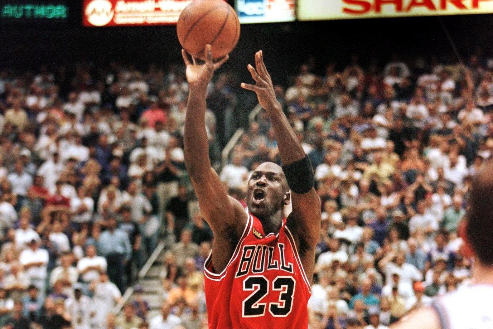
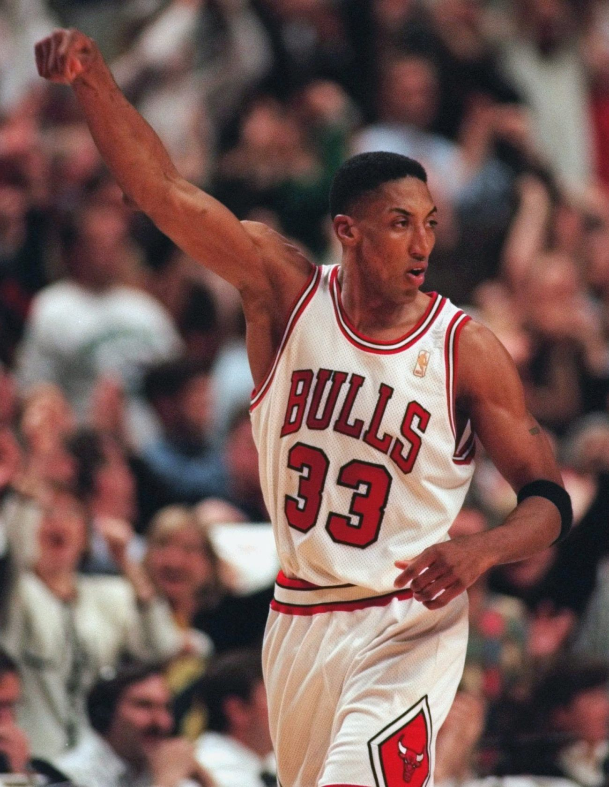
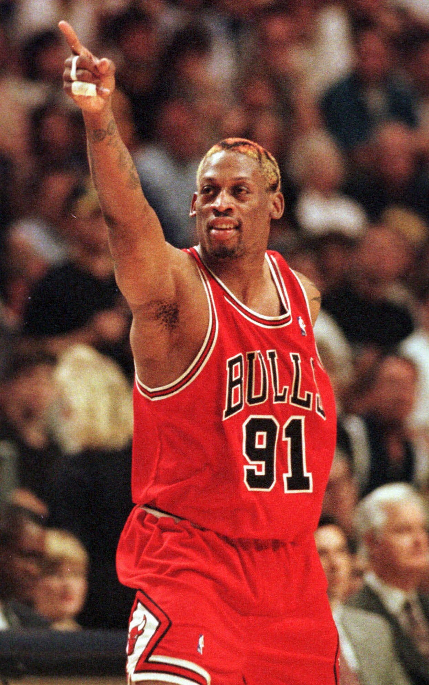

We had everything against us
The 1997–98 NBA season was the Bulls' 32nd season in the National Basketball Association. The Bulls entered the season as the two-time defending NBA champions, where they defeated the Utah Jazz in the 1997 NBA Finals in six games, winning their fifth NBA championship. During the offseason, the Bulls acquired Scott Burrell from the Golden State Warriors. Without All-Star forward Scottie Pippen for the first half of the season due to a foot injury sustained from the 1997 NBA Finals, the Bulls played around .500 with a 9–7 record in November. However, Pippen would eventually return as the Bulls posted a 13-game winning streak between March and April, as they finished first place in the Central Division with a 62–20 record. In the playoffs, the Bulls defeated the New Jersey Nets 3–0 in the first round, the Charlotte Hornets 4–1 in the semifinals, and then the Indiana Pacers 4–3 in the Conference Finals en route to advance to the NBA Finals. In the Finals, they met the Utah Jazz in a rematch from last year's NBA Finals and just like last year, they would go on to defeat the Jazz in six games to win the championship. The championship was their sixth in eight years and completed the franchise's second "3-peat". The season also saw Michael Jordan earn his fifth and final NBA Most Valuable Player Award, while being selected for the 1998 NBA All-Star Game, where he also won his third and final All-Star Game MVP Award. This was Jordan's last season as a Bull, as he announced his second retirement after it was over. However, he did make a second comeback with the Washington Wizards in 2001. Following the season, Phil Jackson resigned as head coach, Pippen was traded to the Houston Rockets, rebound-specialist Dennis Rodman left for the Los Angeles Lakers as a free agent, Luc Longley was dealt to the Phoenix Suns, Steve Kerr signed with the San Antonio Spurs, Scott Burrell signed with the New Jersey Nets, and Jud Buechler signed with the Detroit Pistons. Because of this dismantling of the team, this was the last season for the Bulls dynasty that had headlined the NBA throughout the 1990s. What followed was a long rebuilding process between 1998 and 2004, and the Bulls did not return to the postseason until 2005.
Michael Jordan
Scottie Pippen
Dennis Rodman
“The strength of the team is each individual member. The strength of each member is the team.”
― Phil Jackson